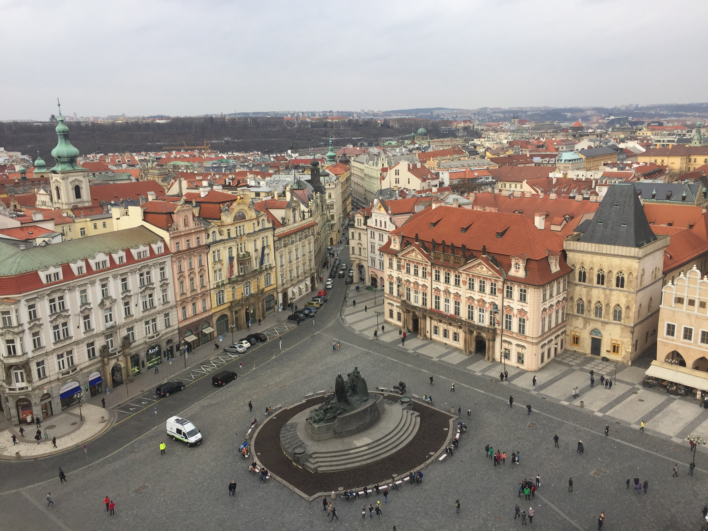
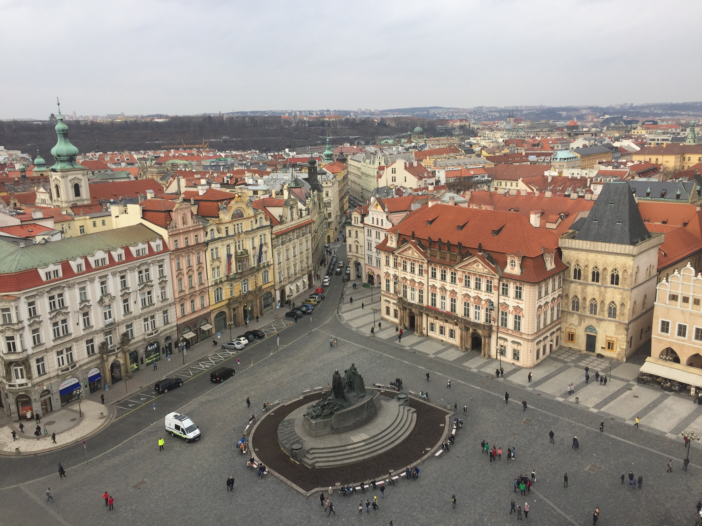
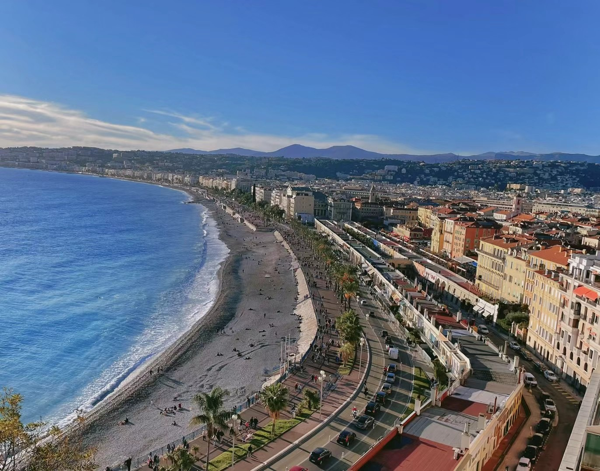
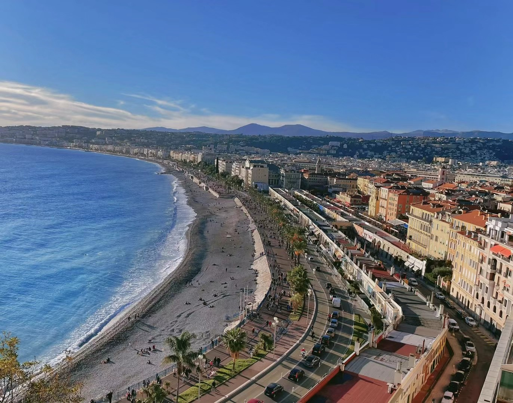

I love exploring new places and cultures. Here are some photos from my journeys around the world.

 

 


Each journey has taught me something new about the world and about myself. Traveling allows me to practice languages in real contexts and understand cultural nuances that can't be learned from books alone.